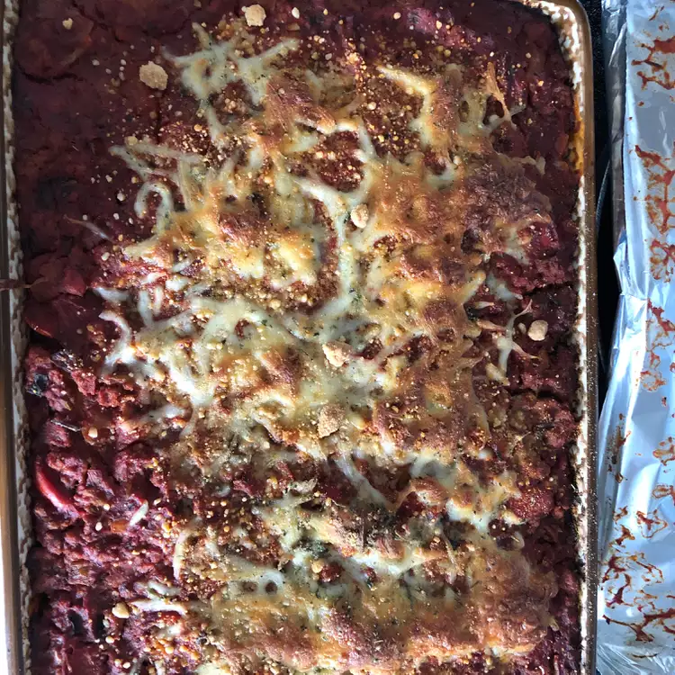

classic Lasagna

Description
This classic lasagna is a comforting Italian d
ish made with layers of pasta, rich meat sauce, creamy
béchamel, and plenty of melted cheese. Perfect for family
gatherings or a cozy dinner!
Ingredients
- 9 lasagna noodles
- 500g ground beef
- 1 onion, chopped
- 2 cloves garlic, minced
- 800g canned tomatoes
- 200g mozzarella cheese, shredded
- 100g Parmesan cheese, grated
- 2 cups béchamel sauce
- Salt and pepper to taste
- Fresh basil leaves (optional, for garnish)
Steps
- Preheat the oven to 180°C (350°F).
- Cook the lasagna noodles according to package instructions; drain and set aside.
- In a large skillet, sauté onion and garlic until translucent, then add the ground beef and cook until browned.
- Add the canned tomatoes, salt, and pepper, and simmer for 20 minutes to develop flavors.
- Spread a layer of meat sauce in a baking dish, followed by a layer of noodles, then béchamel sauce, and mozzarella cheese.
- Repeat the layers until all ingredients are used, finishing with béchamel and a sprinkle of Parmesan cheese on top.
- Bake in the preheated oven for 30-35 minutes or until golden and bubbly.
- Let it cool for a few minutes before serving. Garnish with fresh basil if desired.